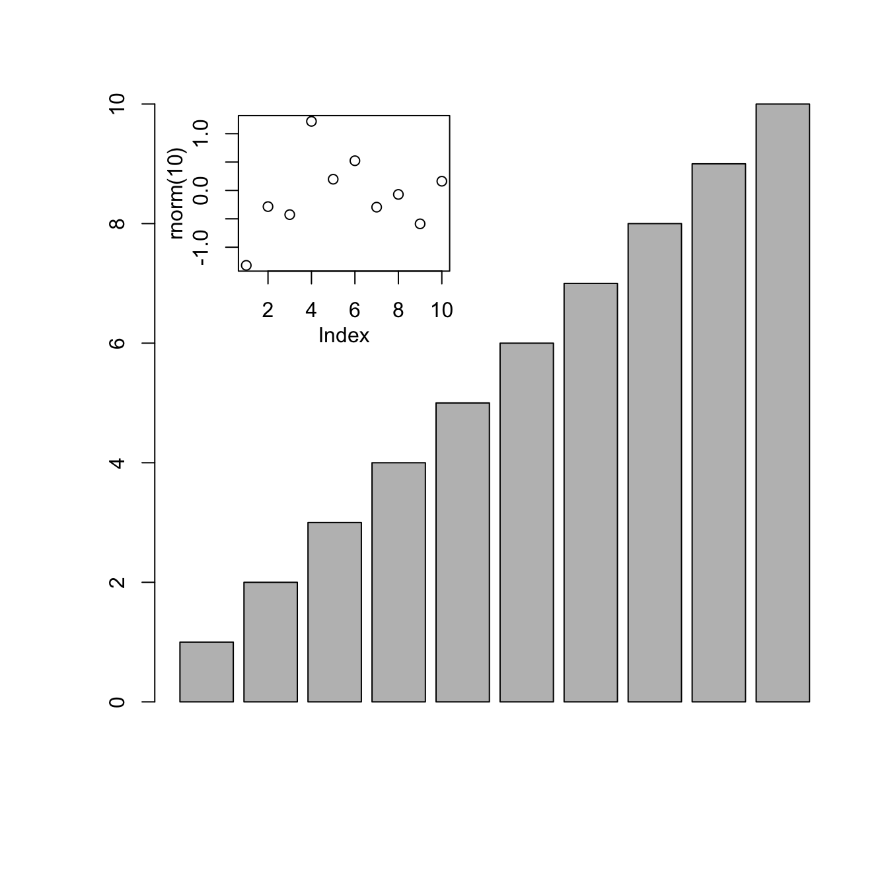
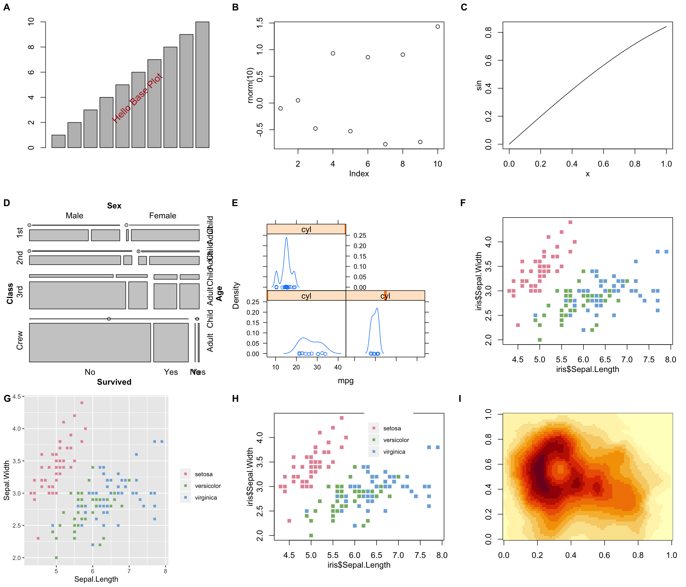

ggplotify——连接各类R图形
王诗翔 · 2019-08-05
在作图的时候想拼接不同的图形对象，如pheatmap 包的热图、ggplot2 对象以及 base 图形等。
这里找到了Y叔的ggplotify包，以下是对 Vignette 的翻译，以帮助自己理解用法，也希望读者受益。
查看源代码发现仅仅 4 个文件，加起来 100 多行代码的样子居然能有如此神效，有空一定要读源码学习下~
grid
library("grid")
library("ggplotify")
p1 <- as.grob(~barplot(1:10))
p2 <- as.grob(expression(plot(rnorm(10))))
p3 <- as.grob(function() plot(sin))
library("vcd")
data(Titanic)
p4 <- as.grob(~mosaic(Titanic))
library("lattice")
data(mtcars)
p5 <- as.grob(densityplot(~mpg|cyl, data=mtcars))as.grob 函数接收绘制图形的 expression、公式或者函数等。图形可以由基础图形生成
(p1, p2, p3) 或者 grid (p4)。如果图形产生了图形对象，它可以直接用于其他
工具包lattice、meme和UpSetR等的输入。
因为这里将图形转换为了grob对象，所以它兼容grid图形系统与相关工具包。
我们现在可以使用grid.draw绘制p1和p2，以及使用pushViewport进行图形嵌入。
grid.newpage()
grid.draw(p1)
vp = viewport(x=.35, y=.75, width=.35, height=.3)
pushViewport(vp)
grid.draw(p2)
upViewport()
如果你不熟悉grid，你可以使用ggplot2去完成类似的任务。
ggplot2
所有可以转换为grob对象的图形都可以使用as.ggplot函数转换为ggplot对象。
library(ggplot2)
p1 <- as.ggplot(~barplot(1:10)) +
annotate("text", x = .6, y = .5,
label = "Hello Base Plot", size = 5,
color = 'firebrick', angle=45)
p2 <- as.ggplot(expression(plot(rnorm(10))))
p3 <- as.ggplot(function() plot(sin))
p4 <- as.ggplot(~mosaic(Titanic))
p5 <- as.ggplot(densityplot(~mpg|cyl, data=mtcars))图形排列
现在有了ggplot对象，我们可以利用cowplot或者patchwork包将所有的图形组合起来。
library(cowplot)
library(colorspace)
col <- rainbow_hcl(3)
names(col) <- unique(iris$Species)
color <- col[iris$Species]
p6 <- as.ggplot(~plot(iris$Sepal.Length, iris$Sepal.Width, col=color, pch=15))
p7 <- ggplot(iris, aes(Sepal.Length, Sepal.Width, color=Species)) +
geom_point(shape=15) + scale_color_manual(values=col, name="")
legend <- get_legend(p7)
## also able to annotate base or other plots using ggplot2
library(ggimage)
p8 <- p6 + geom_subview(x=.7, y=.78, subview=legend)
p9 <- as.ggplot(~image(volcano))
plot_grid(p1, p2, p3, p4, p5, p6, p7, p8, p9, ncol=3, labels=LETTERS[1:9])